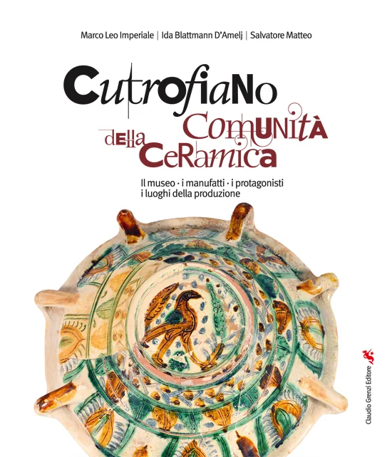
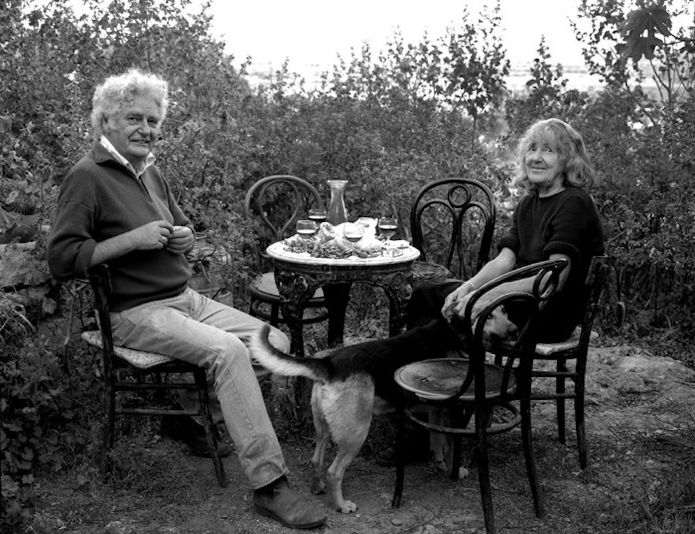
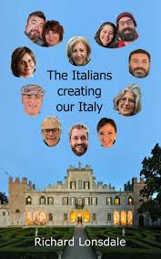

Programme 2024
Museum Tour
Mary Coppola
Head of the Restoration Laboratory at Museo Castromediano

The Mediterranean: everything you didn't know
From mythology to biodiversity and beyond
Senem Önen Tarantini
Marine biologist and researcher for the European Research Infrastructure Consortium

Latvia for Beginners
Kristine Vanaga

Finland balancing between East and West
Juha and Päivi Järvelä
Both retired, continuing studies in military history and industrial pharmacy

Visit to the Cutrofiano Pottery Museum
with lunch at Pesce Frittu e Baccalà

Antonio Verrio, the internationally acclaimed artist from Lecce
Hilda Caffery and Susan Arculus

Guided tour of Patience Gray's masseria
Patience Gray was the first writer to introduce Salento cooking to the world. She wrote the cult food classic Honey from a Weed, recently translated into Chinese, directly from her kitchen close to Presicce-Acquarica.
Her son, Nicholas Gray, will take us on a 'living museum' tour around the rustic masseria, the wild gardens and sculpture park she shared with the artist Norman Mommens, sculptor "at the end of the world".

Challenges Facing Reporters Today. Still Speaking Truth to Power?
Kate Adie
Chief News Correspondent for BBC News

Jammin' in Likkle Jamaica
Joan Webley
Jamaican artist, attorney and cultural activist

The Italians Creating our Italy
Richard Lonsdale
Writer and computational scientist

November 30th, 2024
Abbazia di Cerrate, SP100 km 5, 73100, Lecce
FAI: Ponte tra Culture
Inaugural event – Fondo Ambiente Italiano (FAI)

Christmas with the Berkeley